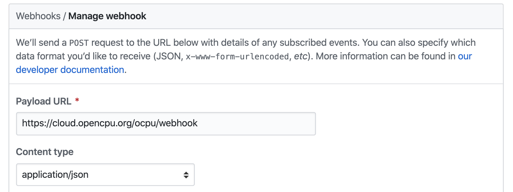

name: title class: center, middle, title # OpenCPU ### An API for Embedded Scientific Computing Matt Mackenzie <div style="font-size: 12px"> <a href="https://github.com/mbmackenzie/distogram/blob/master/README.md" target="_blank">tutorial</a> <span>•</span> <a href="https://mbmackenzie.ocpu.io/distogram" target="_blank">example</a> </div> --- name: overview # What is OpenCPU? -- - a **server** to host OpenCPU apps locally or on the cloud - a HTTP API for data analysis using **R** - a **JavaScript** library to integrate everything together -- A platform to create web apps centered around using R for data processing and visualizations. Useful Links: - website: https://www.opencpu.org/ - github: https://github.com/opencpu/opencpu --- # Steps to Creating an Application -- - **Creating a Dysfunctional App** > creating an R package to accomplish the data processing we need and the HTML for the user to interact with -- - **OpenCPU.js** > connecting the HTML to the R package with the OpenCPU JavaScript library -- - **Local Development** > testing the app locally -- - **App Deployment** > deploying the app to the OpenCPU Cloud. --- # opencpu.js -- #### Load the Library ``` html <script src="https://code.jquery.com/jquery-1.11.1.min.js"></script> <script src="https://cdn.opencpu.org/opencpu-0.4.js"></script> ``` <div style="font-size: 12px"> Current versions: <a href="https://www.opencpu.org/jslib.html" target="_blank">https://www.opencpu.org/jslib.html</a> </div> -- #### Included Functions > <span style="font-size: 44px; padding-right: 25px;">`rplot`</span> generate graphics in a div > <span style="font-size: 44px; padding-right: 25px;">`rpc`</span> data processing unit --- ## RPlot ```javascript $("#plotdiv").rplot( fun, [, args ] [, callback ]) ``` - `fun` is the function name. - `args` is an object with the parameter names as the object keys and the parameter values as the object values. - `callback` is optional. ## RPC ```javascript ocpu.rpc( fun, [, args ] [, complete ] ) ``` - `fun` is the function name. - `args` is an object (see above). - `complete` is a callback called only on success with one arg: output (R return value) --- # OpenCPU in R <h4 style="margin-bottom: -10px;"> Installing the R package </h4> ```r install.packages("opencpu") ``` -- <h4 style="margin-bottom: -10px;"> Build, install, and load your app </h4> ```r library(devtools) build() install() library([package_name]) ``` -- <h4 style="margin-bottom: -10px;"> Start the local server </h4> ```r library(opencpu) ocpu_start_app("[package_name]", no_cache = TRUE) ``` --- # Deployment In your github project, go to Settings, Webhooks, and click ‘Add Webhook.’ - Set **Payload URL** to *<https://cloud.opencpu.org/ocpu/webhook>*. - Set **Content Type** to *application/json*. .center[] - Click ‘Add Webhook’ <h4 style="margin-bottom: -5px;"> Available at: </h4> > <span>https://</span>github_username.ocpu.io/github_project --- class: center, middle # Questions?